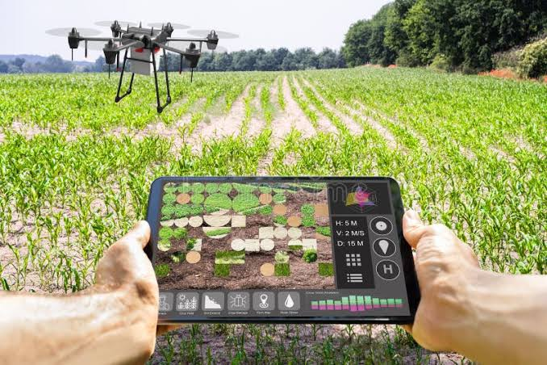

Register workers, organise sections, and keep every record safe and easy to find.
Keep your whole farm team on one system. Workers register once, leaders manage their sections, and every record stays safe and easy to find.
Join the system
Every worker's details are saved automatically when they register.
Section leaders, managers, secretary and treasurer each get the right access.
Passwords are encrypted, so private information stays private.